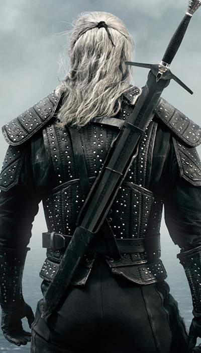

Considerações Iniciais
Nessa análise eu não tenho interesse nenhum em analisar a série levando em conta
os aspectos do jogo "The Witcher". Ambos pertencem ao mesmo universo, mas o jogo não é de meu
interesse. O site já possui a análise (e spoilers) de um jogo (Resident Evil 2). Mas para desencargo de consciência
e sabendo que ao longo do texto provavelmente eu citarei o jogo. lá vai (em negrito ainda por cima):
The Witcher 3 tem várias sub-tramas que não importam muito para o verdadeiro resultado final do game. Levando em
conta como você trata Ciri ao longo do jogo (como uma criança ou como uma adulta que ela é) os destinos dela mudam.
Ou ela morre, ou ela se torna imperatriz de Nilfgaard (e aqui temos um spoiler da série, sim, o pai da Ciri é o imperador
de Nilfgaard na série também) ou ela vira uma Witcher (O que gera um bom contraponto a todo o enredo da série de livros, já que desde
o primeiro momento é explícito que apenas HOMENS podem virar Witchers).

A série impressiona, mas é confusa
A série do bruxão na Netflix escolheu mostrar os contos dos primeiros livros durante esta primeira temporada. Para contar essas peripécias de Geralt, que acontecem em espaços de tempos longos e sem um fio condutor claro, a série optou por inserir uma outra linha do tempo. Isso porque a série poderia cair em episódio desconexos e ficar sem um pano de fundo que prendesse a audiência para as temporadas seguintes. Para resolver esse problema a segunda linha temporal cumpre o papel de amarrar a trama geral da série levando os personagens e a política daquele mundo adiante.
Entretanto, como o foco dessa primeira temporada é basicamente apresentar os personagens, essa segunda linha temporal acaba ficando extremamente confusa nos primeiros três episódios. Essa confusão se dá por causa de cenas curtas, diálogos apressados (e até mesmo bobos) e falta de informação. O primeiro episódio, em especial, foi quase um tiro no pé. Efeitos especiais fracos, má apresentação de personagens, atuações duvidosas e erros técnicos de produção me fizeram duvidar até mesmo da seriedade do seriado. O ponto mais importante de todos os oito episódios é tão mal explicado que diversas pessoas perguntaram pela internet que diabos é a tal Lei da Surpresa.(Abordada futuramente no texto, e que, só causou dúvidas em que nunca ouvir falar de the witcher ou de quem só jogou the witcher 1,2 e 3)
Por sorte, a partir do segundo capítulo é evidente a crescente qualidade em cada um desses aspectos. O quarto episódio, em especial, tem um papel fundamental quando começa a colocar ordem nas cenas, até então bem desconexas, e preparar o terreno para o bom desfecho da primeira temporada no episódio 8.
Amo y amo

Ok, Henry Cavill interpretando Geralt ficou excelente, o homem nasceu para esse papel. Fã assumido de video-games (o que quase o fez perder o papel de superman), Cavill já zerou The Witcher 3 duas vezes. Ou seja, ele não era só um bom ator de Hollywood com um papel espetacular que caiu em seu colo, ele era literalmente o ator que a série precisava, porque ele conhece o personagem (Ok que o Geralt dos games é mais sentimental que o Geralt no primeiro livro), ele sabe a essência e sabe exatamente como se expressar e Agir. Joey Batey também está excelente como Jaskier (Dandelion nos games). Por mais que eu pessoalmente ache o personagem insuportável em alguns momentos e fico me perguntando como Geralt não matou ele (esse sentimento nefasto está alojado dentro de mim muito por conta do terceiro jogo, que em 40% do tempo total, está concentrado em você salvar ele do Filho da Puta Junior (perdão, mas esse é literalmente o nome do bandido) ), tenho que admitir que a presença dele na série não é um simples alívio cômico que faz piadas da vida de bruxo e escreve músicas sobre histórias que ele nunca viveu. Jaskier para Geralt é muito mais que isso, ter um bardo ao seu lado mostra o último pingo de humanidade dentro de Geralt, humanidade essa que é reforçada mais tarde com a presença de Ciri.
O subtítulo evidentemente não é pra nenhum dos dois, muito pelo contrário. Este pertence exclusivamente para Anya Chalotra (atriz que interpreta Yennefer). Enquanto que os acontecimentos do mundo parecem um caos nos primeiros episódios, acompanhar a desgraçada vida de Yen e sua superação até virar a feiticeira que tanto conhecemos, é o que mais nos prende na trama de pano de fundo. Contudo, alguns fãs podem achar estranho, pois muito do que é contado aqui é novidade real. A atuação da jovem Anya Chalotra revela em seu olhar, e até mesmo em sua postura, a transformação pela qual a personagem passa até o final inusitado e surpreendente da temporada.
A personagem passa por uma transformação que acima de tudo, mostra muito sobre quem ela é. No começo ela é rejeitada e vendida mais barato que uma Leitoa, mas dá a volta por cima
e se torna a maior encantadora de homens do mundo, aqueles que a ignoravam hoje estão ajoelhados, beijando seus pés. Mas tudo tem um preço na vida, e em troca da beleza que possui,
Yennefer se torna uma mulher incapaz de ter um filho, o que não parece um problema de início, já que ela não tinha planos de ter uma criança. Mas no futuro, a falta de escolha
deixa ela paranóica. Quando conhece Geralt e tenta transferir o Djinn (Basicamente o gênio do Alladin, só que em uma versão demoníaca) para seu corpo, Yennefer ainda não quer ter
um filho(a), esse nunca foi o desejo da personagem (Até conhecer Ciri), o que a incomodava é que as mulheres tem a escolha de ter ou não um filho, enquanto ela não tinha opção.
A frase mais emblemática da personagem na primeira temporada é quando é perguntada sobre o que ela queria. Yennefer sem hesitar responde: "Eu quero TUDO".

Ok, mas e a Lei da Surpresa?
No universo de The Witcher, ela se trata do preço que um homem que salva alguém pode pedir a quem foi salvo e é uma tradição bastante respeitada, como vimos no enredo. Na lógica da surpresa, isso pode ser qualquer coisa, a pessoa que evoca a lei pode reivindicar ”o que você possui, mas ainda não sabe”. É um pedido por algo que nem o salvador, isto é, a pessoa que pode evocar a Lei, e nem o ajudado tem conhecimento.
Na série, ao salvar Duny, pretendente de Pavetta (filha da Rainha Calanthe de Cintra), Geralt evoca a Lei como brincadeira, mas isso acaba sendo tomado como verdade pelo cavaleiro. Ao ser salvo, Duny pergunta o que o bruxo quer em troca. Imediatamente, o episódio revela um plot twist na história de Geralt: a filha de Pavetta, Ciri, será o seu “pagamento”, já que logo depois de evocar a lei e de Duny fazer a pergunta, Pavetta revela que está grávida. Desta maneira, Geralt ganha uma Criança Surpresa. Mesmo não querendo reivindicá-la, o peso do Destino na cosmogonia da série, quase como uma espécie de Deus, nos mostra que é impossível o bruxo se desvincular da criança, que viria a ser Ciri. Portanto, as crianças surpresas são crianças pré-destinadas.
Spoilers
Por se tratar de uma série, e cada episódio retratar um conto do livro (os primeiros livros eram narrados em contos, e não em uma história linear como é comum
hoje em dia). Mais do que nos outros textos, essa parte será a mais direta possível com spoilers que quem começar a ver o episódio ja vai entender:
Geralt é expulso de Blaviken após causar um massacre naquelas terras.
Renfri é morta por Geralt (uma pena).
O império de Nilfgaard consegue derrotar e invadir o império de Cintra.
Vendo sua derrota, a Avó de Ciri, se mata.
Yennefer se "sacrifica"(Aguardem a próxima temporada) para impedir o avanço de Nilfgaard.
Geralt encontra Ciri na última cena da série.
SPOILER FUTURO (NÃO LEIA SE VOCÊ NÃO QUISER ESTRAGAR SUA EXPERIÊNCIA COM A SÉRIE FUTURAMENTE)
A curiosidade bateu? Bom, o spoiler está aí embaixo, com opacidade 5%:
Geralt e Yennefer morrem